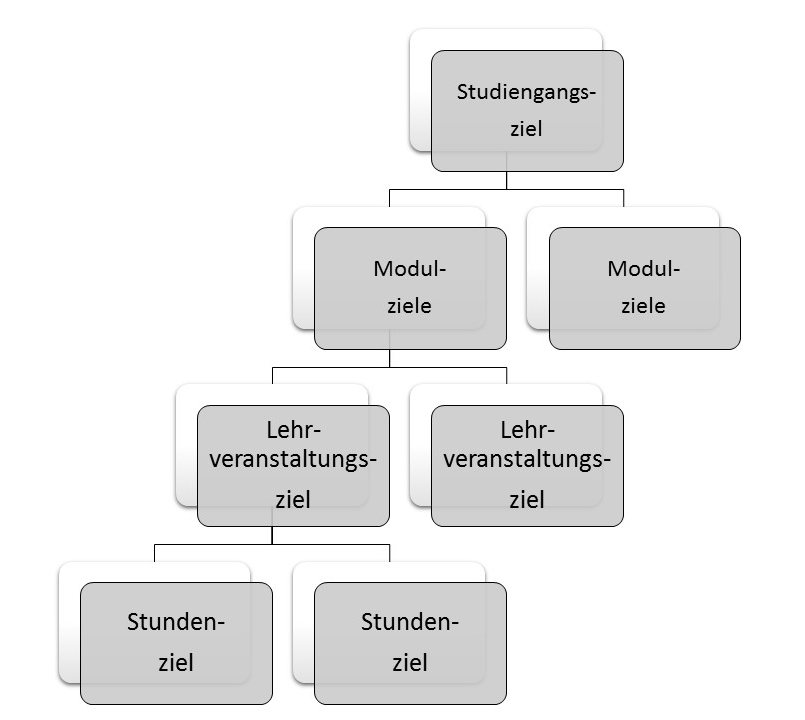

Kompetenzorientierte Lernziele- warum und für wen?
Die Frage ist nicht so trivial, wie sie zunächst scheint. Sie ist berechtigt, wenn wir das Ideal eines primär akademisch interessierten und motivierten, selbstgeuert lernenden, autonomen Studierenden vor Augen haben. Biggs & Tang (2011) nennen diesen Studierendentyp in ihrem überaus lesenswerten Buch "Susan". Hätten wir nur Susans als Studierende wäre dieser Kurs wohl überflüssig. Allerdings sind die Susans heutzutage an unseren Hochschulen aus vielen Gründen in der Minderheit.
Die Mehrzahl unserer Studierenden wird demnach durch einen anderen Typus repräsentiert. "Robert" ist lediglich pragmatisch an einem Studienabschluss interessiert, um einen ihn interessierenden Beruf ausüben zu können. Seine akademischen Interessen sind begrenzt. Da er nur über begrenzte Motivation zum selbstgesteuerten Lernen verfügt, braucht er Vorgaben und Unterstützung, um seine Ziele zu erreichen.
Susan und Robert unterscheiden sich nicht nur in ihrer Studienmotivation, sondern auch in ihrem Lernstil und Unterstützungsbedarf.
Unsere Aufgabe ist es, einen Hochschulunterricht nicht nur für die Susans zu gestalten, sondern auch die Roberts abzuholen und in ihrem Ziel eines erfolgreichen Studienabschlusses zu unterstützen. Und dafür sind kompetenzorientierte Lernziele erforderlich.
Eindeutig und transparent formulierte Lernziele machen dem Studierenden deutlich, welche Fähigkeiten und Fertigkeiten im Sinne von Handlungskompetenzen von ihm erwartet werden, um einen Studiengang, ein Modul oder eine Lehrveranstaltung (Teilmodul) erfolgreich absolvieren zu können. Wie er den dafür erforderlichen Lernprozess gestalten soll, wird ihm zunächst noch nicht vorgegeben. Der Studierende hat somit eine klares Zielvorgabe und lernt nicht "ins Blaue hinein". Empirische Befunde (Krapp, 2005; Shuell, 1986) zeigen, dass allein hierdurch die Lernmotivation deutlich gesteigert wird.
Für den Dozierenden haben kompetenzorientierte Lernziele eine handlungsleitende Funktion. Sie bilden einen Referenzrahmen für die Planung angemessener Lehr- und Lernaktivitäten (Lehrveranstaltungen, Übungen etc.). Lernziele sind darüber hinaus die Grundlage für die Planung, Durchführung und Bewertung formativer und summativer Prüfungen.
Lernziele werden auf verschiedenen Ebenen formuliert.
Angestrebte Lernergebnisse eines ganzen Studiengangs ("Makroebene") werden in den entsprechenden Prüfungsordnungen der Universität oder Hochschule als Studiengangsziele formuliert. Bei staatlich reglementierten Ausbildungen wie z. B. dem Studium der Humanmedizin gilt entsprechend die Approbationsordungsordnung für Ärzte.
Bei modularisierten Studiengängen werden Lernziele in den Modulbeschreibungen("Mesoebene") oft als Qualifikationsziele bezeichnet.
Auf der "Mikroebene" der einzelnen Lehrveranstaltung (Vorlesung, Kurs, Seminar, Übung etc.) legt der Lehrende die Lernziele für seiner Veranstaltung unter Berücksichtigung aller Rahmenbedingungen bis in die einzelne Lehrveranstaltung selbst fest.
Diese Granularität der Lernzielebenen wird in der Literatur (Pfäffli, 2015) als Richtziel, Grobziel und Feinziel bezeichnet. Entscheidend ist, dass in dieser Hierarchie alle Lernzielebenen aufeinander bezogen sein müssen.
Die Planung der Ziele erfolgt dabei stets top-down.
